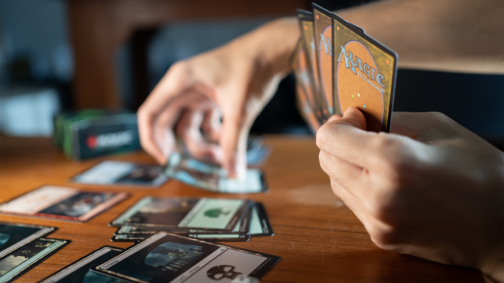
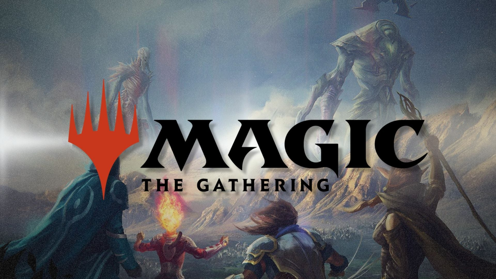

Magic: The Gathering (Magic) is the world's first and most popular trading card game, blending strategic gameplay with a massive, evolving multiverse of lore. You play as a Planeswalker—a powerful wizard capable of traveling between different worlds (planes) and summoning creatures, spells, and artifacts to defeat your opponents. It doesn't matter if it is your first time playing Magic, or you've been playing throughout your life, every game of Magic is unique and entertaining. At its core, Magic: The Gathering is satisfying because it blends strategy, creativity, and uncertainty into a single experience. Players act as powerful wizards who build customized decks, meaning a big part of the game happens before you even play—choosing cards that work together in clever ways. During the game, you balance short-term tactics (like when to attack or defend) with long-term planning (developing your resources and setting up combos), all while adapting to randomness from shuffled cards and your opponent's decisions. This mix creates constant problem-solving and surprise, so every match feels different, and success comes from both skill and experimentation rather than just luck.
My name is Grayson Charat, and I am a Freshman at Canyon Crest Academy Highschool. I have been playing...Magic: The Gathering for over five years now, and I have never had a boring game in my life. Througthout playing, I've made many new friends and the game has changer my life.

